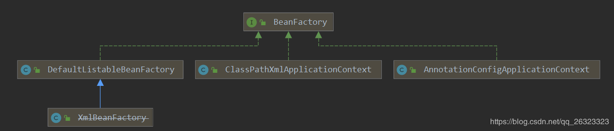

BeanFactory，这是Spring容器的基础实现类，它负责生产和管理Bean的一个工厂。当然BeanFactory只是一个接口，它的常用实现有XmlBeanFactory、DefaultListableBeanFactory、ApplicationContext等。

FactoryBean
FactoryBean是一个接口
public interface FactoryBean<T> {
T getObject() throws Exception;
Class<?> getObjectType();
boolean isSingleton();
}
Spring官方文档有关FactoryBean解释:If you have complex initialization code that is better expressed in Java as opposed to a (potentially) verbose amount of XML, you can create your own FactoryBean, write the complex initialization inside that class, and then plug your custom FactoryBean into the container.
org.springframework.beans.factory.support.AbstractBeanFactory
protected Object getObjectForBeanInstance(Object beanInstance, String name, String beanName, @Nullable RootBeanDefinition mbd) {
if (BeanFactoryUtils.isFactoryDereference(name)) {
if (beanInstance instanceof NullBean) {
return beanInstance;
}
if (!(beanInstance instanceof FactoryBean)) {
throw new BeanIsNotAFactoryException(beanName, beanInstance.getClass());
}
}
**********************************************************************
//判断该对象是否instanceof FactoryBean,或者name是否是以&开头
if (beanInstance instanceof FactoryBean && !BeanFactoryUtils.isFactoryDereference(name)) {
Object object = null;
//RootBeanDefinition是BeanDefinition的实现用来装载FactoryBean的实现类
if (mbd == null) {
object = this.getCachedObjectForFactoryBean(beanName);
}
//通过反射调用FactoryBean的getObject()方法返回
if (object == null) {
FactoryBean<?> factory = (FactoryBean)beanInstance;
if (mbd == null && this.containsBeanDefinition(beanName)) {
mbd = this.getMergedLocalBeanDefinition(beanName);
}
boolean synthetic = mbd != null && mbd.isSynthetic();
object = this.getObjectFromFactoryBean(factory, beanName, !synthetic);
}
return object;
**********************************************************************
} else {
return beanInstance;
}
}
3.总结FactoryBean和BeanFactory
BeanFactory：工厂类接口，Spring容器的核心接口，实例化bean、配置bean之间的依赖关系
FactoryBean：实例化bean过程比较复杂时可以考虑使用